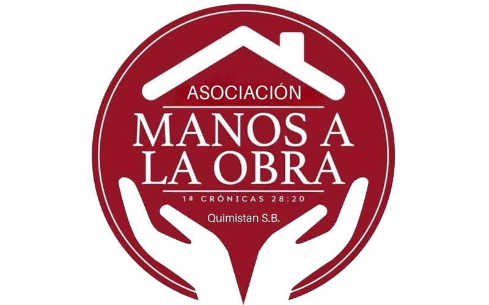

Nuestra misión
Ser un medio de comunicación que contribuya a la edificación espiritual y humana de las familias, difundiendo mensajes de fe, valores cristianos, música y contenidos que inspiren esperanza y fortalezcan los corazones.
En Radio Gracia HN creemos en el poder de la palabra, la música y los mensajes que edifican vidas. Somos un medio de comunicación comprometido con compartir contenidos que transmitan fe, esperanza, amor y bendición a cada hogar.
Desde Quimistán, Santa Bárbara, Honduras, llevamos nuestra señal al mundo, acompañando a nuestros oyentes con mensajes y contenidos que inspiran, fortalecen y acercan a las personas a Dios.
Acompáñanos desde cualquier lugar del mundo.
Ser un medio de comunicación que contribuya a la edificación espiritual y humana de las familias, difundiendo mensajes de fe, valores cristianos, música y contenidos que inspiren esperanza y fortalezcan los corazones.
Llegar a cada rincón de Honduras y más allá de nuestras fronteras, utilizando la tecnología y la comunicación digital para compartir un mensaje de amor, fe y esperanza las 24 horas del día.
Cada visita y cada oyente forman parte de nuestra comunidad.
Un espacio para saludar, compartir y estar en contacto con otros oyentes de Radio Gracia HN.
Agradecemos a las instituciones, empresas y personas que apoyan nuestra labor.

Ministerios Asociación Manos a la Obra
Gracias por ser parte de nuestra comunidad. Síguenos en nuestras redes sociales y comparte nuestra señal con tus familiares y amigos.